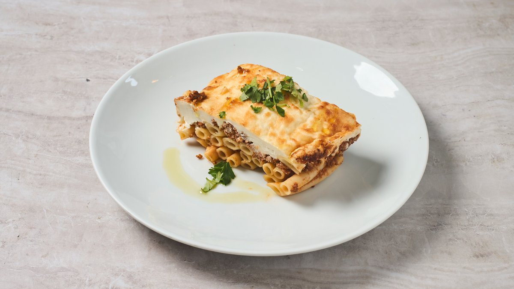
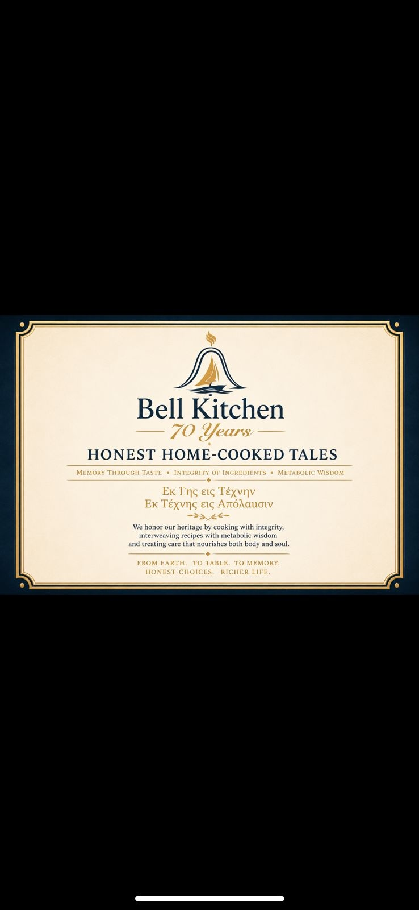
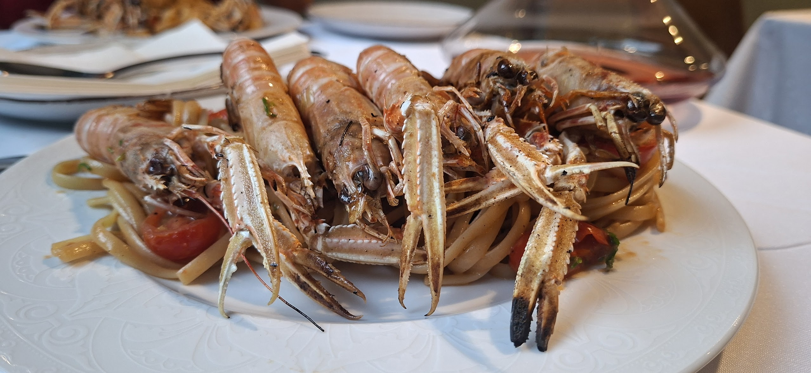
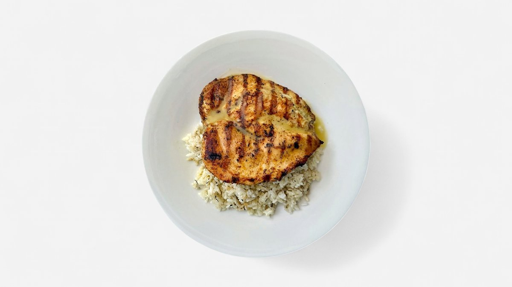
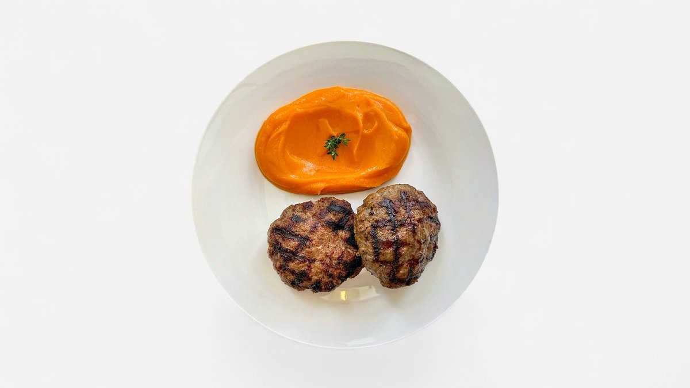
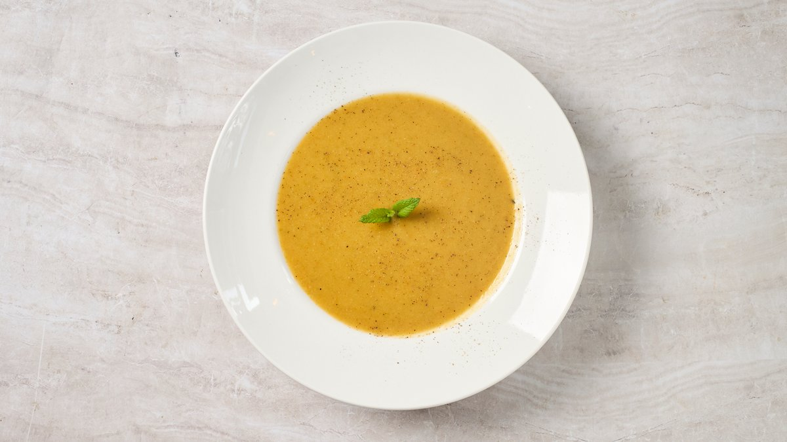
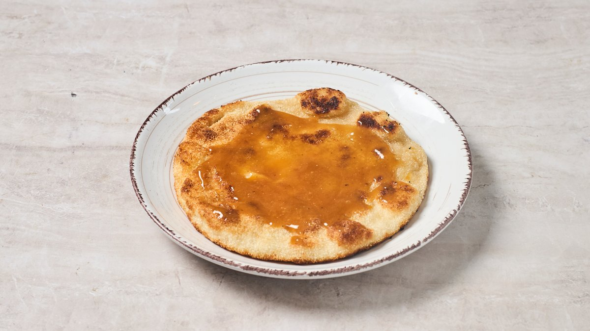
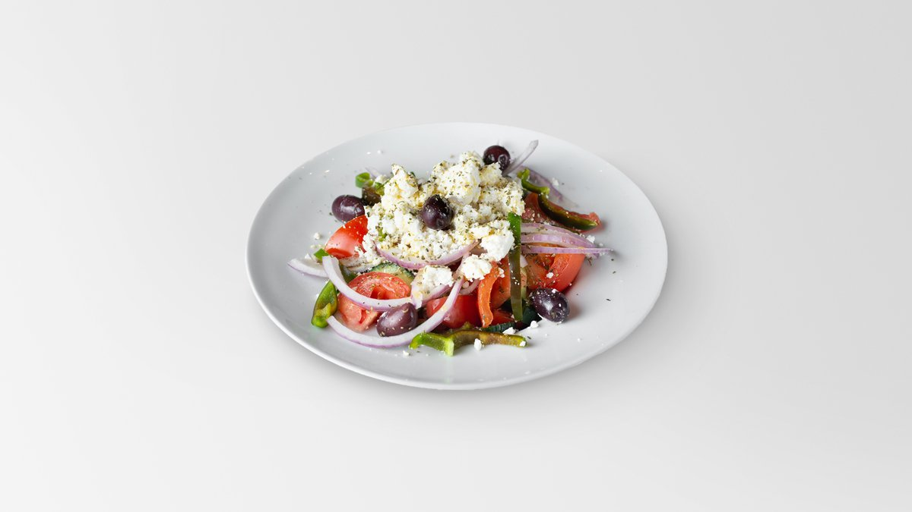

Όλα όσα μαγειρεύουμε,
φρέσκα κάθε μέρα.
Σιγομαγειρεμένα κλασικά, φρέσκα λαχανικά κάθε μέρα, ελληνικό κρέας από κρεοπώλες που ξέρουμε με το όνομά τους. Οι τιμές περιλαμβάνουν ΦΠΑ. Αλλεργιογόνα κατόπιν αιτήματος.
Πιάτα-Υπογραφή
Τα πιάτα για τα οποία επιστρέφουν οι Αθηναίοι.

Παραδοσιακός Μουσακάς
Σιγοψημένη μελιτζάνα, μοσχαρίσιος κιμάς ελευθέρας βοσκής σιγοβρασμένος σε ντομάτα και κανέλα, με αέρινη μπεσαμέλ. Η συνταγή δεν έχει αλλάξει από τη δεκαετία του ’70.

Σπιτικό Παστίτσιο
Στρώσεις μπουκατίνι, μοσχαρίσιος κιμάς και βελούδινη μπεσαμέλ — το κυριακάτικο ελληνικό τραπέζι σε ένα πιάτο, ψημένο κάθε μέρα.

Λαχανικό της Ημέρας
Ένα εποχικό λαδερό ή ψητά λαχανικά στον φούρνο, φτιαγμένα με ό,τι έφτασε από τη λαϊκή σήμερα το πρωί. Vegan κατόπιν αιτήματος — ρωτήστε τον σερβιτόρο σας.
Κρέας της Ημέρας
Το σιγομαγειρεμένο κλασικό της ημέρας — μοσχαρίσιο γιουβέτσι, αρνί φρικασέ ή χοιρινό με σέλινο αυγολέμονο — ανάλογα με την εποχή.
Φρέσκο Ψάρι Ημέρας
Ό,τι φέρνουν οι βάρκες από τον Ευβοϊκό — τσιπούρα, λαβράκι ή σκουμπρί — στη σχάρα με ελαιόλαδο, λεμόνι και ρίγανη. Ζητήστε να δείτε την ψαριά της ημέρας: θα την φέρουμε στο τραπέζι σας και θα σας καθοδηγήσουμε στην επιλογή.

Καραβίδες με Χειροποίητο λιγκουίνι
Ελληνικές καραβίδες σε χειροποίητο λιγκουίνι, με ζωμό σαφράν και ντομάτας, φινίρισμα με crème fraîche και φρέσκα μυρωδικά.
Στη Σχάρα
Στα κάρβουνα — όπως πάντα το έκανε η Αθήνα.

Φιλέτο Κοτόπουλο · Σχάρας
Φιλέτο κοτόπουλο ελευθέρας βοσκής μαριναρισμένο σε ρίγανη και λεμόνι, πάνω σε ρύζι μπασμάτι με άνηθο. Έντιμη πρωτεΐνη, με μέτρο.

Μπιφτέκια Μοσχαρίσια
Χειροποίητα μπιφτέκια από ελληνικό μοσχάρι με κρεμμύδι, ψημένα στη σχάρα με μια σταγόνα ελαιόλαδο.
Σούπες & Ορεκτικά
Ελαφριά, ζεστά, ιδανικά για μοίρασμα.

Ψαρόσουπα Βελουτέ
Μεταξένια βελουτέ πάνω στον ζωμό ψαριού της ημέρας, με καρότο, σέλινο και μια στιξιά ελαιόλαδο. Ένα μπολ Αιγαίο.

Σφακιανή Πίτα με Μέλι
Τηγανητή κρητική πίτα γεμιστή με φρέσκια ξινομυζήθρα, με θυμαρίσιο μέλι. Μια μικρή γεύση Κρήτης στο Κουκάκι.
Σαλάτες & Ψωμί
Τα μεσογειακά βασικά, φτιαγμένα σωστά.

Χωριάτικη Σαλάτα
Ώριμες ντομάτες, αγγούρι, πράσινη πιπεριά, κόκκινο κρεμμύδι, ελιές Καλαμάτας και ένα κομμάτι φέτα βαρελίσια. Ελαιόλαδο, ρίγανη. Τίποτα άλλο.
Ψωμί με Προζύμι
Ψημένο εδώ κοντά κάθε πρωί. Σερβίρεται ζεστό με εξαιρετικό παρθένο ελαιόλαδο. Ανά άτομο — χρεώνεται μόνο αν σερβιριστεί.
Ποτά
Μικροί Έλληνες παραγωγοί που εμπιστευόμαστε.
Οργανικό Κρασί Χύμα · 125ml
Εναλλασσόμενη επιλογή από βιολογικούς Έλληνες παραγωγούς — Ασύρτικο, Μοσχοφίλερο, Αγιωργίτικο. Ρωτήστε την ομάδα για το σημερινό ποτήρι.
Ελληνική Craft Μπύρα
Ανεξάρτητες μικροζυθοποιίες από όλη την Ελλάδα — lager, IPA και πού και πού μια sour. Ζητήστε τη σημερινή λίστα.
Ελληνικός Καφές · Μπρίκι
Αργοβρασμένος σε χάλκινο μπρίκι, σερβίρεται με ένα δροσερό ποτήρι νερό και ένα λουκούμι. Γλυκύτητα όπως την προτιμάτε.
Επιδόρπια
Φτιαγμένα στην κουζίνα μας, κάθε πρωί.
Βιολογικό Γιαούρτι με Βιολογικό Μέλι
Πηχτό, πλήρες γιαούρτι από μικρό θεσσαλικό γαλακτοκομείο, με ωμό θυμαρίσιο μέλι και θρυμματισμένα καρύδια.
Τα αλλεργιογόνα που αναφέρονται είναι ενδεικτικά. Ενημερώστε τον σερβιτόρο σας για κάθε αλλεργία ή δυσανεξία και θα σας καθοδηγήσουμε στο μενού.